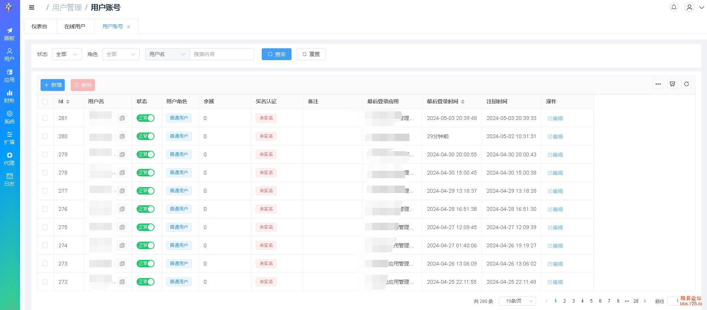
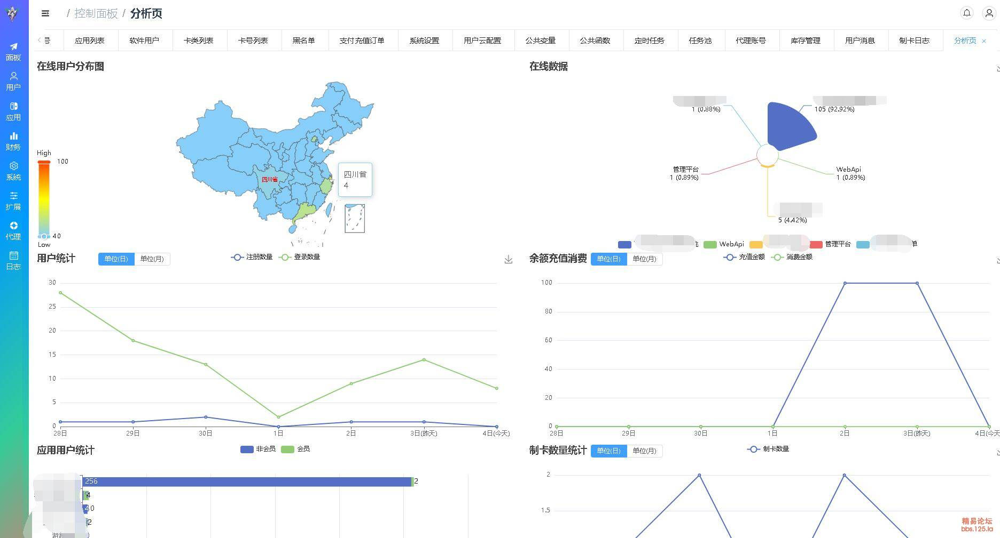
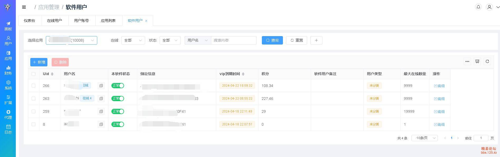
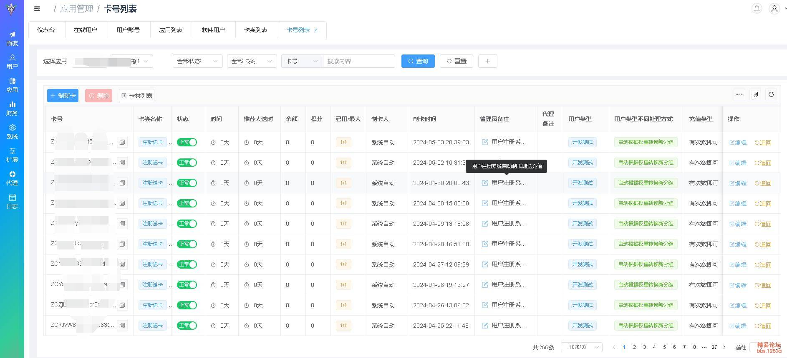
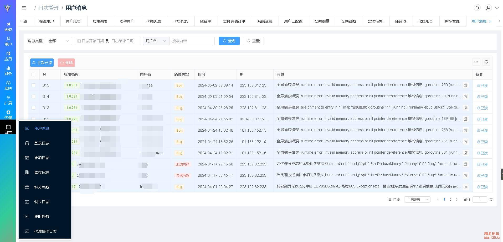

| 软件名称 | 飞鸟快验网络系统[简称：飞鸟快验] |
| 版本号 | V1.0.449 |
| 文档编号 | FNKY-DS-449-BZ |
| 文档用途 | 计算机软件著作权登记补正用程序设计说明文档 |
| 申请人 | 金普新区友谊街道雪小果网络科技工作室 |
| 编制日期 | 2026年7月22日 |
本文档用于说明“飞鸟快验网络系统 V1.0.449”的程序组成、核心业务流程、模块边界、数据结构、接口设计及运行机制。与通用模板式说明不同，本文档仅围绕本软件实际实现展开，重点描述网络验证、单账号多应用、卡号直充、支付订单、代理库存、CPS 推广、营销签到、云函数扩展、任务池处理以及 VMP 一机一码授权等专属能力。
本文档的直接用途包括：一是作为软件著作权登记补正时的文档鉴别材料；二是作为开发、维护、问题排查和版本迭代时的技术依据；三是为后续二次开发、对接支付通道、扩展业务活动提供程序层面的参考。
飞鸟快验网络系统是一套面向软件授权和运营场景的后台系统。它不是单一的登录接口程序，而是同时提供管理后台、代理后台、WebApi 授权接口、Web 用户中心和 WebSocket 实时能力的完整业务平台。系统服务对象包括软件运营方、代理商、终端软件用户及接入本平台的客户端程序。
系统围绕“用户账号、应用配置、软件用户、卡类卡号、支付订单、代理库存、推广关系、营销活动、扩展脚本”这九类核心对象工作。平台既支持软件作者使用账号验证方式向用户发放授权，也支持采用卡号、充值、续费、积分、余额等多种组合模式进行商业化运营。
| 业务域 | 核心能力 | 对应代码区域 |
|---|---|---|
| 管理后台 | 管理员登录、系统设置、应用配置、用户与日志管理、财务与统计图表 | `new/app/controller/admin`、`new/app/router/admin` |
| 代理体系 | 代理账号、库存包、代收款、下级发展、代理日志 | `new/app/controller/agent`、`new/app/logic/common/agent` |
| 授权接口 | WebApi 鉴权、软件用户登录、续费、取配置、支付回调、任务池 | `new/app/router/webApi2`、`new/app/controller/webApi` |
| 营销与用户中心 | CPS 推广、签到积分、短链、活动页面、订单查看 | `new/app/controller/webUser`、`new/app/logic/webUser` |
| 支付与财务 | 多通道支付、代收款、退款、余额支付、订单状态流转 | `new/app/logic/common/rmbPay`、`new/app/service/S_PayOrder.go` |
| 卡号与授权 | 卡类配置、制卡、批量制卡、卡号充值、卡号直充、授权转换 | `new/app/logic/common/ka`、`new/app/controller/admin/KaFull.go` |
| 一机一码授权 | VMP 授权码计算、机器码绑定、授权数据封装 | `new/app/logic/common/VMP/VMP.go` |
| 扩展机制 | 公共变量、公共函数、云函数、定时任务、任务池、云存储 | `Service/Ser_Js`、`new/app/controller/admin/PublicJs.go`、`new/app/logic/common/cron` |
系统采用 Go 语言实现后端核心逻辑，Gin 作为 HTTP 路由和请求处理框架，Gorm 负责数据持久化，Viper 管理运行配置，Zap 管理日志输出。前端采用前后端分离模式，管理端与代理端编译后的静态资源嵌入到服务端发布包内，由服务端直接输出。
从运行视角看，飞鸟快验不是单一入口程序，而是一个聚合型服务容器。服务启动后，会同时初始化配置、日志、缓存、数据库连接、业务路由、定时任务和快验相关的内部状态，然后分别对外暴露管理入口、代理入口、WebApi 接口和 Web 用户入口。
客户端软件 / 管理后台 / 代理后台 / Web用户中心
│
▼
Gin 路由层
┌────────────┬────────────┬────────────┬────────────┐
│ Admin │ Agent │ WebApi │ WebUser │
└────────────┴────────────┴────────────┴────────────┘
│
▼
Controller / Middleware
│
▼
Logic / Service / SDK
│
▼
MySQL / 本地缓存 / 定时任务 / 云函数
系统在 `new/app/router/Route.go` 中统一挂载路由，并按业务对象拆分为 `admin`、`agent`、`webApi2`、`webUser`、`webSocket` 五组子路由。这样做的目的不是代码形式上的分类，而是将“后台运营、代理运营、授权接口、终端用户、自定义实时功能”明确隔离，避免不同调用方混用同一套权限校验和返回协议。
| 路由组 | 典型用途 | 主要中间件 |
|---|---|---|
| Admin | 后台页面资源、管理员登录、系统级配置与维护 | 管理员 Token、飞鸟快验状态校验 |
| Agent | 代理业务、库存、提现、代理日志 | 代理 Token、功能权限校验 |
| WebApi | 供客户端软件调用的授权、支付、任务池、公共变量接口 | 域名校验、WebApi Token、接口解密 |
| WebUser | 面向终端用户的注册、登录、续费、CPS、签到活动页面 | 登录态校验、应用上下文校验 |
| WebSocket | 长连接通信、实时状态同步或消息下发 | 连接身份识别 |
本系统的后端实现并非简单的“控制器直连数据库”，而是形成了较明确的分层：
当前代码中同时存在 `api/`、`Service/` 与 `new/app/` 三套目录，反映了系统从早期结构向新结构演进的过程。补正材料保留这一事实，因为这恰恰体现出本软件在持续迭代过程中形成的真实工程组织，而不是拼凑的示例项目。
| 目录 | 说明 |
|---|---|
| `main.go` | 程序启动入口，负责全局异常捕获、配置加载、数据库初始化、定时任务启动和 Web 服务启动。 |
| `core/` | 基础初始化层，包含 Viper 配置、Zap 日志、数据库初始化、Gin 路由装配等基础设施。 |
| `new/app/router/` | 按调用端划分的五类路由注册代码，是系统多入口能力的统一装配层。 |
| `new/app/controller/` | 后台、代理、WebApi、WebUser 等控制器代码，体现具体业务菜单与接口集合。 |
| `new/app/logic/common/` | 支付、卡号、VMP、云存储、缓存、定时任务等复用业务逻辑。 |
| `new/app/service/` | 数据库对象服务，封装订单、用户、日志、卡类、推广关系等对象操作。 |
| `new/app/models/` | 数据库结构体、请求响应结构体、业务常量，反映平台核心数据结构设计。 |
| `KuaiYanSDK/` | 快验对接相关 SDK 与辅助函数，承担快验状态、接口调用、登录态同步等特定业务。 |
| `云函数/` | 面向二次开发的 JavaScript 脚本样例和业务扩展脚本。 |
飞鸟快验的一个核心设计点是“平台账号”和“应用内软件用户”分离。平台账号用于统一登录、余额、代理关系和支付记录；软件用户用于某一具体应用下的到期时间、积分点数、绑定信息和用户类型。这样可以实现“同一账号登录多个应用，但各应用的授权状态相互独立，余额可共享”的业务效果。
| 对象 | 职责 | 典型数据 |
|---|---|---|
| 平台用户 | 账号体系、余额、代理归属、全局登录 | 用户名、密码、余额、注册时间、登录时间 |
| 软件用户 | 某个应用下的授权对象 | AppId、Uid、VipTime、VipNumber、Key、UserClassId |
| 应用 | 承载软件用户和授权策略的业务单位 | 收费模式、加密方式、验证码方式、云变量 |
卡类是可配置的授权模板，卡号则是卡类实例化后的可销售凭据。卡类中定义了授权时长、积分、余额、售价、用户类型切换规则、卡号长度、前缀、校验方式等信息；卡号在生成时会继承这些属性并形成唯一的可用序列。系统既支持后台直接制卡，也支持代理基于权限制卡和库存分发。
支付订单对象不是单纯的充值单据，而是系统商业化流程的主线数据。它要记录支付通道、处理类型、付款金额、代收代理、回调地址、附加信息、订单状态及退款状态。`new/app/logic/common/rmbPay/rmbPay.go` 中将不同支付通道抽象为统一接口，并在逻辑层内完成订单生成、回调、退款、代收切换与后续业务驱动。
代理既可以走“利润分成”模式，也可以走“库存包控制”模式。库存包允许上级给下级分配指定卡类和有效期的卡号库存，从而使上级在不直接转余额的前提下控制下级业务能力。这一设计区别于单纯的邀请码分销，更接近真实的软件销售渠道管理。
系统内同时存在 CPS 推广、签到积分、活动促销、短链跳转等对象。推广关系对象记录邀请人、被邀请人、层级、归属应用及返佣状态；签到对象记录活动、任务、积分日志；短链对象用于推广落地与活动入口承接。该组合使平台同时具备授权系统和运营系统的双重属性。
客户端软件调用 WebApi 接口时，先由 Host 校验与 Token 中间件确定接口归属，再进入用户 API 加密与参数解析流程。系统根据应用配置判断当前应用是否启用明文、AES、RSA 或摘要式接口保护，并结合验证码或风控逻辑完成请求校验。请求通过后，由业务控制器读取软件用户、平台账号、应用配置和绑定信息，返回授权数据、有效期、积分或附加配置。
客户端程序 -> WebApi 路由 -> Host/Token/解密中间件 -> 控制器参数解析 -> 业务逻辑读取 App / AppUser / User / Setting -> 绑定验证、到期判断、状态校验 -> 返回授权结果、配置或错误码
终端用户以平台账号维度登录，但登录某个应用后，会在该应用下形成独立的软件用户记录。平台余额保留在统一账号下，应用级数据如授权到期时间、积分点数、用户类型、绑定信息则分别存储在对应应用的数据结构中。该模式既降低了用户的重复注册成本，也保留了每个应用独立运营的空间。
`new/app/logic/common/ka/ka.go` 中实现了卡号生成、卡号直充、用户类型换算、积分余额叠加、过期时间延长等关键逻辑。卡号生成时会根据卡类前缀、长度和字符类型生成随机主体，再追加校验字符防止输错或伪造。卡号充值时，根据应用的账号模式或卡号模式决定是修改软件用户授权，还是修改平台余额及相关日志。
在用户类型发生变化时，系统不是简单覆盖原授权，而是根据旧类型权重和新类型权重换算剩余时长或点数，再叠加新卡类带来的授权增量。这保证了不同会员等级间的转换具备业务连续性，而不会造成旧授权直接丢失。
`new/app/logic/common/rmbPay/rmbPay.go` 将支付宝 H5、支付宝 PC、支付宝当面付、微信支付、虎皮椒、易支付、小叮当、余额支付等多种通道统一抽象为 `RmbPayItem`。下单时，系统首先根据应用与场景确定订单类型，再根据是否启用代理代收选择系统支付配置或代理支付配置，最后生成支付订单并记录异步回调地址。
支付成功后，回调逻辑会驱动后续业务，如余额充值、购卡直充、购买卡号、更新日志等。退款流程则要求先校验订单状态，再依据原支付方式执行退款接口或余额回退。整个过程与订单表、余额日志、积分日志和卡号日志联动，保证业务动作可追溯。
当订单配置了代收代理且代理具备代收权限时，系统优先使用代理的在线支付配置生成订单，使用户付款直接进入代理侧收款账户。这样设计减少了平台方统一归集资金再二次分账的复杂度，也降低了中心账户沉淀风险。若代理配置不可用或代理余额、权限不满足条件，系统自动回退到平台默认支付配置。
根据 `cps推广系统设计.md` 与 `营销活动模块设计.md` 的实现思路，系统将活动入口、推广链接、用户注册、首单付费、返佣结算和用户中心展示整合在一起。推广人可通过推广链接获得核心客户和裂变客户；后台通过订单完成情况统计有效推广量；签到活动则通过签到记录、签到任务和积分流水驱动营销留存。
这类逻辑并不是外挂页面，而是直接进入数据模型和后台菜单：数据库中有 `DB_cpsInfo`、`DB_cpsUser`、`DB_cpsInvitingRelation`、`DB_checkInInfo`、`DB_checkInLog`、`DB_checkInScoreLog` 等结构，管理端也对应配置、日志和统计页面。
`new/app/logic/common/VMP/VMP.go` 用于生成与设备绑定的一机一码授权数据。该模块先将用户名、邮箱、机器码、到期日期、时间限制、产品代码、用户自定义数据等字段按自定义格式打包，再计算摘要、追加校验，并使用给定的 RSA 私钥和模数执行大整数指数运算，最终输出 Base64 形式的授权码。
这一流程与一般的账号登录授权不同，它面向 EXE/APK 一键加验证等场景，强调绑定设备、限制分发和保护桌面程序授权。授权数据字段、打包顺序、补码与运算方式均是本软件内部约定，体现了其专用性。
系统为二次开发者保留了较大自由度。公共函数本质上是服务器侧 JavaScript 扩展点，可在特定流程前后执行自定义逻辑；任务池提供异步任务投递、查询和回执能力，适合长耗时接口；定时任务则支持以 cron 表达式定时运行数据库刷新、统计汇总或用户自定义逻辑。通过这套扩展机制，本软件不需要频繁修改核心代码即可承载个性化业务。
系统支持多层接口防护：一是基于 Token 的调用身份校验；二是基于 Host 的接口入口限制；三是对用户 API 进行 AES、RSA 或摘要式保护；四是针对登录、注册、短信发送等场景配置图片验证码、短信验证码和行为验证码；五是通过黑名单限制异常 IP 或异常绑定信息。
涉及卡号充值、库存转移、订单处理、余额增减等关键业务时，系统大量使用数据库事务和 `FOR UPDATE` 锁来避免并发下的状态错乱。以卡号直充逻辑为例，程序在事务中重新加锁读取软件用户和平台用户，再进行余额、授权时长、积分和日志写入，避免重复充值、并发覆盖和死锁引起的数据不一致。
系统内置了余额日志、积分日志、卡号日志、登录日志、代理操作日志、推广订单日志、定时任务日志等多类审计数据。日志并不是附属功能，而是业务闭环的一部分。管理员后续排查订单、充值、退费、封禁和代理纠纷时，都依赖这些日志对象进行核验。
`main.go` 在程序入口设置了全局异常捕获，一旦出现未处理错误，会将堆栈信息汇总并上报到用户消息或日志体系。配置层采用默认值回填机制；数据库未连接成功时，系统保留初始化页面或等待配置逻辑；支付和代理代收的失败分支也设计了自动回退或错误备注记录机制。
系统使用 MySQL 作为核心数据存储。不同业务对象在 `new/app/models/db` 下分别定义。由于本软件同时具备授权、财务、代理和营销能力，因此数据表不止停留在“用户表 + 订单表”两张基础表，而是形成了较完整的业务模型。
| 数据表对象 | 作用 |
|---|---|
| `DB_KaClass`、`DB_ka` | 定义卡类模板和卡号实例，承载卡类售价、授权时长、积分、余额、使用状态等信息。 |
| `DB_AppInfoWebUser`、`DB_appPromotionConfig` | 定义应用在 Web 用户中心的展示与推广配置。 |
| `DB_cpsInfo`、`DB_cpsUser`、`DB_cpsInvitingRelation`、`DB_cpsPayOrder` | 用于推广活动配置、推广用户关系、返佣订单和裂变链路跟踪。 |
| `DB_checkInInfo`、`DB_checkInLog`、`DB_checkInScoreLog`、`DB_checkInTaskLog` | 用于签到活动、签到奖励和任务完成记录。 |
| `DB_LogMoney`、`DB_LogVipNumber`、`DB_LogKa`、`DB_LogLogin`、`DB_LogUserMsg` | 记录核心业务变更和安全审计信息。 |
| `DB_Setting`、`DB_shortUrl`、`DB_UserActive`、`DB_tongJiZaiXian` | 承载系统配置、短链、活跃度统计、在线统计等基础与运营数据。 |
软件用户数据采用按应用维度存储的方式，这与单表存储全部软件用户相比，更利于按应用隔离授权数据和按业务规模扩展。日志类表设计成可独立查询和统计的结构，以适应高频数据增长场景。
管理端围绕系统配置、监控面板、用户管理、应用管理、软件用户管理、卡号与卡类、代理管理、日志管理、支付订单、推广与活动配置展开。`new/app/router/admin/admin.go` 中实际挂载了大量业务接口，这些接口与编译后的 VueAdmin 静态资源一同构成完整的后台系统。
WebApi 是飞鸟快验面向客户端软件的核心能力集合，其接口不仅包括授权验证，还包括支付状态查询、卡号信息、任务池、公共变量和云存储。相较于仅提供“登录鉴权”单一接口的验证系统，飞鸟快验的 WebApi 更接近一套完整的应用服务后端。
Web 用户中心承担注册、登录、找回密码、续费、查看订单、修改信息、推广中心、签到活动等面向终端用户的页面能力。其价值在于把软件用户的生命周期延伸到浏览器中，从而降低纯客户端程序在营销和售后上的局限性。
代理后台不是管理后台的缩减版，而是独立面向渠道角色设计的业务控制台，强调库存、下级、代收款、收益和提现等能力，便于多级销售组织使用。
程序启动后，先通过 `core.InitViper()` 读取 `config.json`，并对管理入口、代理入口、端口、验证码、日志、数据库参数设置默认值；再通过 `core.InitZap()` 初始化日志；随后建立本地缓存和数据库连接；数据库成功连接后执行表初始化与部分系统数据刷新；最后装配路由、启动定时任务和 Web 服务。
系统还在启动后初始化与飞鸟快验内部状态有关的逻辑，例如心跳任务、统计刷新任务和 WebSocket 状态管理。这使得系统可以既承担在线验证请求，又能承载后台统计、异步任务和运营活动。
本次补正时同步提交的源程序鉴别材料，围绕以下文件重新选取，目的是突出本软件的核心独创业务，而非展示通用框架代码：
| 文件 | 代表内容 |
|---|---|
| `main.go`、`core/core.go`、`core/InitRouter.go`、`new/app/router/Route.go`、`new/app/router/webApi2/webApi.go` | 展示程序启动、配置、日志、路由分域和 WebApi 入口的组织方式。 |
| `new/app/controller/admin/KuaiYanFull.go` | 展示快验相关后台控制能力、验证码列表、用户信息更新、登录态联动等专用管理流程。 |
| `new/app/logic/common/VMP/VMP.go` | 展示一机一码授权数据打包、摘要与 RSA 大整数运算实现。 |
| `new/app/logic/common/rmbPay/rmbPay.go` | 展示多通道支付、订单创建、代收款切换、支付回调和退款主逻辑。 |
| `new/app/logic/common/ka/ka.go` | 展示卡类卡号、直充、授权时长换算、积分余额更新和日志联动处理。 |
飞鸟快验网络系统的独创性并不体现在单个算法片段，而体现在以下一组可协同工作的业务实现：
这些特征在源码目录、控制器集合、逻辑层实现和数据模型中均有对应落点，因此能够反映本软件的实际设计内容，而非套用通用后台模板。
本文档围绕“飞鸟快验网络系统[简称：飞鸟快验] V1.0.449”编制，用于本次软件著作权登记补正。文档选取的结构、业务对象、程序分层和代表性模块均与该软件的核心功能一致，能够说明其程序组成和实际实现方式。
下列截图为本系统已实际实现的管理端界面示意，用于辅助说明本软件在应用管理、统计监控、用户与卡号管理等方面的实际交互结构。
|
图A-1 管理端首页与监控概览
|
|
 图A-2 用户账号管理页面;
|
|
 图A-3 图表分析页;
|
|
 图A-4 软件用户页(支持多软件所以每个软件都单独有软件用户信息)
|
|
 图A-5 卡号页
|
|
 图A-6 用户消息页;
|